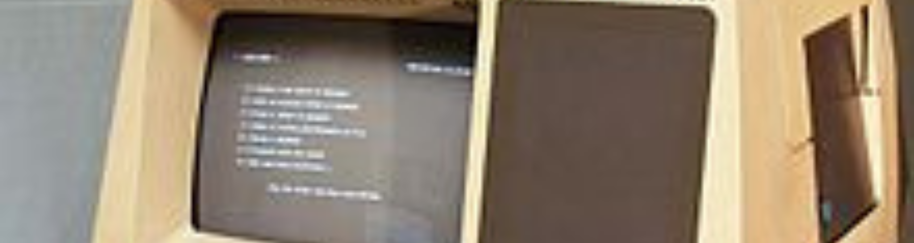

Pernahkah kamu membayangkan bagaimana ribuan transistor bisa bekerja bersama tanpa membuat meja kerjamu penuh dengan kabel? Jawabannya ada di Generasi Ketiga. Inilah masa di mana teknologi tidak lagi hanya soal mengecilkan komponen, tapi menyatukannya dalam satu wadah yang kita kenal sebagai chip.
Insinyur dari Texas Instruments yang pertama kali berhasil menggabungkan berbagai komponen elektronik ke dalam satu kepingan kecil (IC) dari bahan germanium.
Pendiri Intel yang secara terpisah mengembangkan chip silikon. Dia sering dijuluki sebagai "Walikota Silicon Valley" karena kontribusinya menyempurnakan teknologi chip yang lebih praktis diproduksi massal.
Loncatan terbesar di era ini adalah penemuan Integrated Circuit atau IC. Bayangkan ribuan transistor, resistor, dan kapasitor yang dulunya terpisah, sekarang dipadatkan ke dalam satu kepingan kecil silikon.
Penemuan ini benar-benar mengubah permainan. Karena semua komponen berada di satu tempat, perjalanan data jadi jauh lebih pendek. Hasilnya? Komputer jadi jauh lebih cepat, jauh lebih dingin, dan ukurannya mengecil sampai bisa diletakkan di atas meja.
Di era ini, kita mulai mengenal konsep sistem operasi yang lebih modern. Kalau di generasi sebelumnya komputer hanya bisa menjalankan satu tugas sampai selesai baru bisa ganti ke tugas lain, sekarang kita mulai mengenal multitasking.
Berkat adanya sistem operasi, komputer jadi mampu mengelola memori dan menjalankan berbagai program berbeda secara bersamaan. Inilah awal mula komputer mulai terasa seperti "otak" yang bisa melakukan banyak hal sekaligus.
Inilah momen paling ikonik bagi kita pengguna komputer modern. Di generasi ketiga, kita akhirnya meninggalkan kartu berlubang (punched cards) yang merepotkan.
Untuk pertama kalinya, manusia bisa berinteraksi dengan komputer lewat keyboard dan melihat hasilnya secara langsung di monitor. Pengalaman menggunakan komputer jadi jauh lebih interaktif dan instan. Kita tidak perlu lagi menunggu berjam-jam cuman untuk melihat apakah ada kesalahan dalam kode yang kita masukkan.
Karena biaya produksi chip IC lebih efisien dibandingkan merakit ribuan transistor secara manual, harga komputer pun mulai turun. Meskipun masih tergolong mahal, komputer tidak lagi hanya dimiliki oleh raksasa militer atau pemerintah. Universitas dan bisnis skala menengah mulai mampu untuk memilikinya, yang memicu ledakan inovasi perangkat lunak di seluruh dunia.
Generasi ketiga adalah tentang koneksi dan integrasi. Dengan menggabungkan banyak komponen ke dalam satu chip, kita berhasil menciptakan mesin yang tidak hanya kuat, tapi juga mulai bersahabat dengan penggunanya.